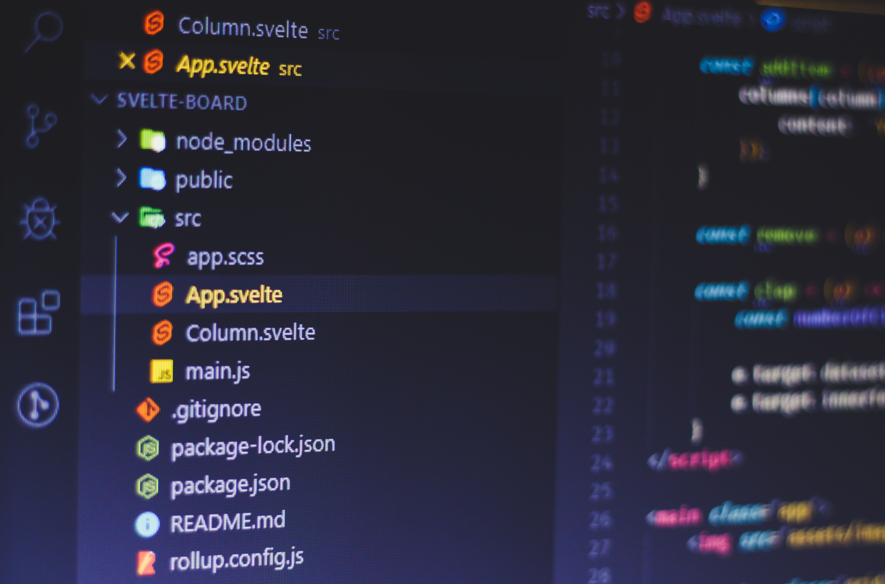

Developer
Developer?
Front-End
Back-End
What is a
Front-End
Developer
개발자가 되기 위한 방법을 알기 위해선 먼저
개발자가 무엇인지 알아야합니다.
개발자란 개발을 하는 사람입니다. 여기서 우리 대다수는 개발을 소프트웨어 개발로 생각합니다.

Please enable JavaScript to view the
comments powered by Disqus.